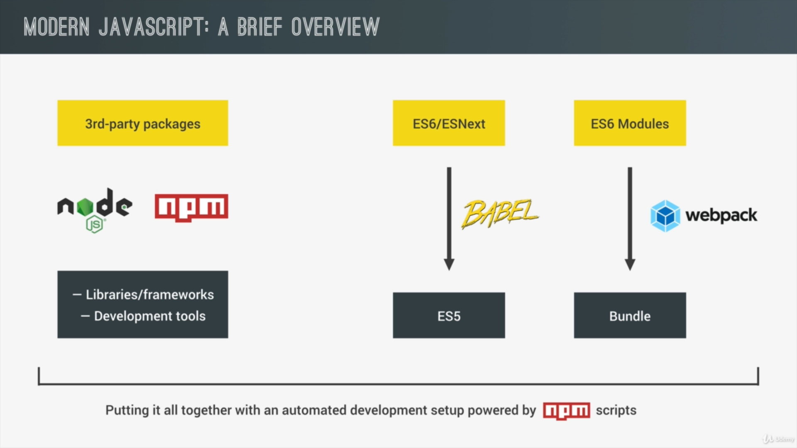

Open overview.html for the markup | Images are taken from: JS Course by Jonas Schmedtmann

Up until now, we have used JavaScript in the old school way. But now, we will learn how to use JavaScript
in a modern (ES6) way.
Modern JS is not more about the language itself. It's about the ecosystem/environment we write our JS
code in. We still write the exact same JS, but we use it together with a set of tools that make it easier
and better to work with. The foundation of all these tools is Node JS and the NPM (Node Package Manager) Ecosystem where we can find all kinds of third party open source tools,
libraries & frameworks (ex: stuff like REACT & ANGULAR, Lodash & jQuery, etc) needed for modern web
development. We also have development tools for task automation, automatic browser reloading or to
compile JavaScript down to ES5.
In order to use/install these tools, we need some kind of tool to install and manage them, and that's
where the NPM comes into the picture. npm is a simple command line interface that allows to
manage web development tools easily. Also, npm also allows us to write scripts to use our
development tools automatically.
Another tool that we use in Modern JS is called Babel. In order to convert cutting edge JS
code like ES6, ES7, or ES8 (which together are simply called "ESNext") down to ES5, so if all browsers
are capable of parsing our code, for that, we use Babel. In a couple of years this might not be
necessary, but for now, this is an important step in the process of modern web development.
Next, we will use ES6 modules, in order to make our code modular and easier to maintain, by separating
different parts of our app/project into different files. ES6 makes this separation of parts in the app
into different files implementing something known as modules. The problem with these modules is that
right now the browsers do not support this functionality yet. So, we have to bundle these modules
together into a single file, using something called a module bundler. The most popular module bundler out
there is Webpack. Webpack can actually do much more than just bundling modules. Some of the
features of Webpack are Code Splitting, Loading many types of assets like sass or images, decreasing our
JavaScript bundle size using an algorithm called "tree shaking" and many more.
Babel and Webpack are NPM Packages. The easiest way to run these packages is by
using something known as "NPM Scripts", which allows us to run all these tools automatically and easily
in our command line interface.
The image above is a quick illustration of the explanation given till now.